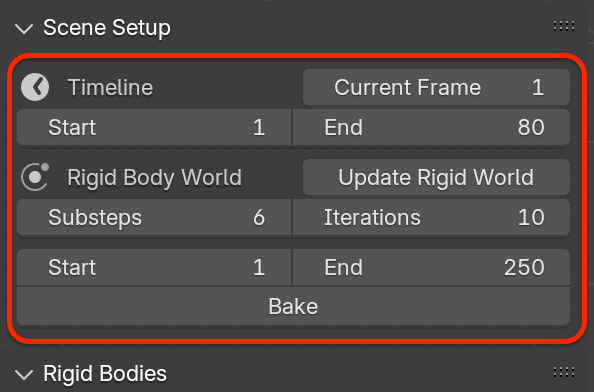

Scene Setup
This panel provides access to configure Timeline, Rigid Body World, and Bake.
{kind=link}

Timeline
The Timeline section displays and edits basic animation frame settings:
Current Frame: Displays the current frame of the scene timeline.Start/End: Defines the playback range used for previewing and baking physics simulations.
These values are shared with Blender’s main timeline.
Rigid Body World
Blender’s rigid body system relies on a scene-level container called the Rigid Body World, which manages:
Global simulation settings (solver iterations, substeps, gravity)
Collections that store rigid bodies
Collections that store rigid body constraints
This add-on automatically manages these settings to ensure consistency.
Update Rigid World
Blender requires all rigid bodies and constraints to be placed in specific collections referenced by the Rigid Body World.
Click to synchronize the scene with the rigid body system and ensure that all add-on objects are correctly registered in the required collections.

This operation will:
Ensure a valid Rigid Body World exists in the scene
Create and assign required collections if missing
Add all rigid bodies to the world collection
Add all rigid body constraints to the constraint collection
Fix broken references caused by:
Linked files
Library Overrides
Collection instances
Note
If the button shows a warning icon, it indicates that the Rigid Body World settings differ from the recommended defaults and should be updated.
This operator is safe to run at any time and is recommended whenever the scene structure changes.
Note
Why Is Needed
Blender’s rigid body system relies on two internal collections:
A collection containing all rigid body objects
A collection containing all rigid body constraints
When rigs are linked, duplicated, or overridden, these references may become outdated or invalid.
The operation rebuilds these references and ensures that all add-on objects are correctly registered in the simulation system.
Simulation Quality Settings
The following parameters control simulation accuracy and stability:
: Number of physics substeps per frame. Higher values improve stability for fast-moving or lightweight objects.
: Solver iteration count per substep. Higher values result in more accurate constraint solving at the cost of performance.
Note
These parameters correspond to Blender’s Bullet physics solver settings.
The add-on provides default values for these parameters based on practical experience, balancing stability and performance.
Bake
Rigid body simulations can be cached for stable playback and rendering.
: Bakes the rigid body simulation into Blender’s point cache for the current frame range.
: Clears the baked cache and restores real-time simulation.
When a bake exists:
Timeline playback no longer recalculates physics
Simulation results are deterministic
Performance during animation playback improves
Important
If you need to adjust rigid bodies or constraints, delete the bake first.
Workflow Notes
Bake only after confirming that the simulation results behave as expected.
After duplicating, linking, or reorganizing the scene structure, it is recommended to run .
When working in a multi-file workflow, run after using or to avoid broken references.